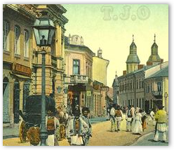
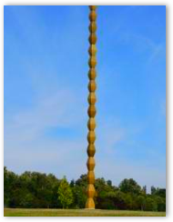
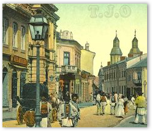
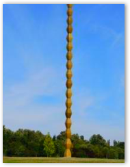
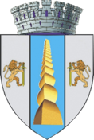
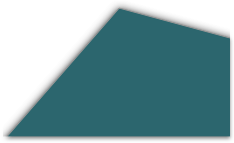
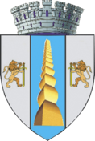
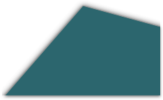

 



Cheile Sohodolului Cheile Sohodolului se află la limita nordică a județului Gorj cu județul Hunedoara, în Munții Vâlcan (o grupare ce aparține lanțului montan Retezat-Godeanu din Carpații Meridionali), în partea nordică a satului Runcu și sunt străbătute de râul Jaleș (Sohodol).
Mănăstirea Tismana este cel mai vechi așezământ monahal încă în funcțiune din Țara Românească. Construită tot prin râvna cuviosului Nicodim, sora ei, Mănăstirea Vodița, a fost distrusă la puțin timp după construire (mai apoi s-a construit Vodița 2, unde Nicodim a revenit de la Tismana), singura citadelă a ortodoxiei noastre rămânând, timp de peste șase veacuri, Mănăstirea Tismana.
Ranca este o stațiune turistică în curs de dezvoltare, aflată pe raza orașului Novaci și a comunei Baia de Fier, județul Gorj, România, situată la 1.600 m altitudine, la poalele vârfului Păpușa în Munții Novaciului din Masivul Parâng, la 18 km de orașul Novaci pe șoseaua Transalpina (DN67C).